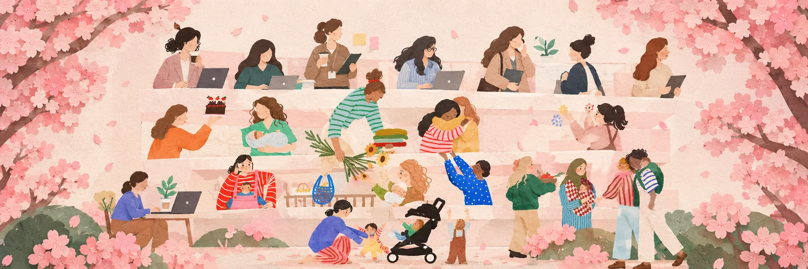

A community for women in Korea
More Than
Just a Mrs.
A Seoul-based community for women who came to Korea through marriage — building lives between cultures, languages, and expectations, one story at a time.
Seoul-Based
A home for women building new lives in Korea.
Story Circles
Small groups. Real conversations. No judgment.
More Than Just a Mrs. is a community for women who came to Korea through marriage and are learning to navigate life between cultures, languages, relationships, and family expectations.
We believe every woman deserves to be seen as more than her role in a family — with her own experiences, challenges, dreams, and identity.
Based in Seoul, we're building genuine connections among women shaping their lives in Korea, in a space where they can be understood without judgment.
"We are here to listen to women — not to speak for them. Every voice, every story, every choice is her own."
Our Vision
A community where women who came to Korea through marriage are seen, heard, valued, and recognized as individuals — not only through their role in a family.
Our Mission
We create a safe, welcoming space where women can:
- 01Share their stories — speak openly about their experiences and perspectives.
- 02Connect with others — build relationships with women who understand.
- 03Have honest conversations — about culture, language, family, identity, and life in Korea.
- 04Build community — connections that go beyond the "multicultural family" label.
Programs
Ways to take part
Flagship
Story Circles
Small groups of 6-8 women meeting in person or online to share their experiences in a structured, judgment-free space. Themes rotate monthly — arriving in Korea, in-law dynamics, raising bicultural kids, identity and language.
Practical
Language & Life Workshops
Beyond Korean class referrals — hands-on sessions on hospital visits, school enrollment, banking, visa renewals, and in-law customs, alongside local volunteers and multicultural family support centers.
Just for Fun
"Just Us" Meetups
No agenda, just good company. Low-stakes gatherings that keep the community feeling alive between the deeper conversations — an easy first step for new or shy members.

Your story matters here.
Come share, listen, and be part of a community that sees you as more than a role. Whether you're new to Korea or years into this life, there's a place for you here.
Join the Community